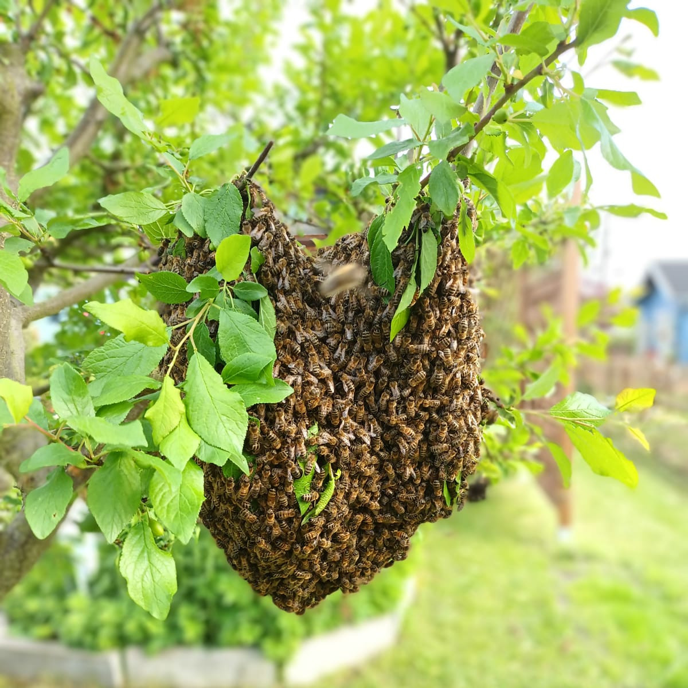

Allgemeines
Die Honigbiene ist ein sehr facettenreiches und faszinierendes Tier, das mich sehr schnell in seinen Bann gezogen hat, als ich angefangen habe, mich fürs Imkern zu begeistern.
Sie gibt es bereits seit 40 Millionen Jahren und weltweit gibt es neun verschiedene Arten von ihr. Bei uns in Europa ist die Honigbienenart Apis mellifera (die westliche Honigbiene) heimisch.
Honigbienen unterscheiden sich von Wildbienen vor allem darin, dass sie in einem Volk leben, während die meisten Wildbienen solitär leben und alleine in der Natur nisten.
Die westliche Honigbiene ist braun-schwarz, sie hat ein behaartes Brustteil und der Hinterleib hat helle und dunkle Streifen.
Wie leben Honigbienen?
Honigbienen leben nicht allein, sondern in einem großen Bienenstaat. In diesem gibt es eine Königin, Arbeiterinnen und Drohnen. Ein solches Volk umfasst im Sommer bis zu 50.000 Bienen.
Die Arbeiterinnen putzen den Stock, pflegen die Brut, sammeln die Nahrung und halten am Eingang Wache.
Die Drohnen (männliche Bienen) hingegen haben nur eine Aufgabe, eine Königin zu begatten. Sobald sie ihre Aufgabe erfüllt haben, sterben sie und im Herbst werden alle Drohnen, während der sogenannten Drohnenschlacht, aus dem Stock geworfen.
Die Königin hat die Aufgabe Eier zu legen und damit die Zukunft des Volkes zu sichern. Sie kann im Sommer am Tag bis zu 2000 Eier legen. Das ist auch wichtig, denn eine Arbeiterin lebt im Sommer nur ca. 2 bis 4 Wochen.

Das Bienenjahr orientiert sich an unseren vier Jahreszeiten. Im Frühling wird damit angefangen das Volk aufzubauen und die Königin beginnt Eier zu legen.
Diese Bienen nutzen im Sommer die ganzen Blüten, um genug Vorrat für den Winter zu sammeln und sich zu vermehren. Das nennt man Schwärmen, dabei fliegt die Königin mit ihrem Hofstaat aus und sucht sich eine neue Heimat.
Dabei machen sie einen Zwischenhalt an einem Baum oder ähnlichem, während Kundschafter nach einer geeigneten Bleibe suchen. Das Schwärmen ist der natürliche Vermehrungsprozess der Honigbienen.

Im Herbst werden die Winterbienen aufgezogen. Sie leben länger als die Arbeiterinnen im Sommer.
Im Herbst findet auch die Drohnenschlacht statt und die Drohnen werden aus dem Volk verbannt.
Im Winter sitzt das Bienenvolk in einer Traube zusammengekuschelt und heizt diese Traube mit Muskelzittern auf über 20 Grad.